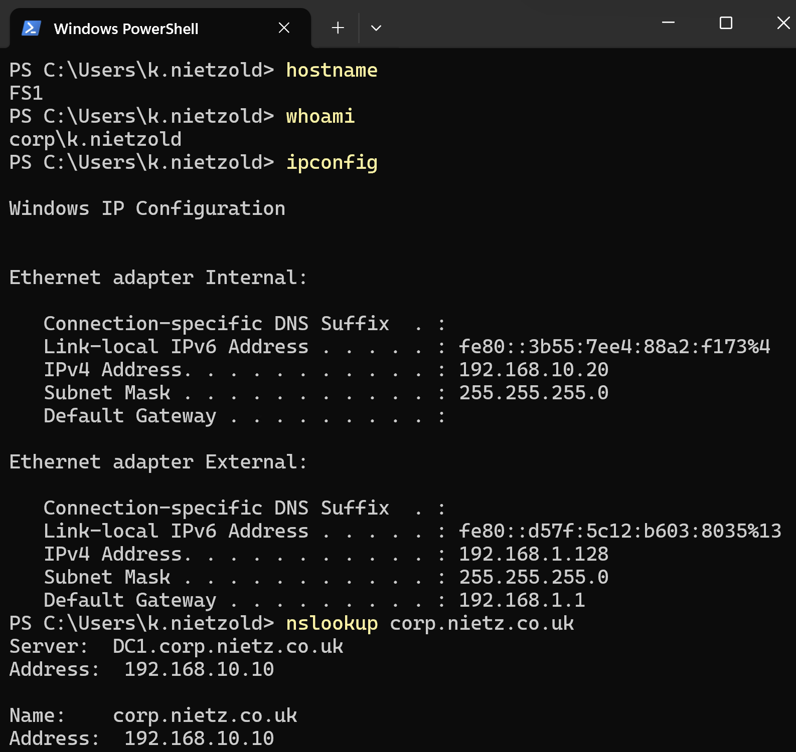
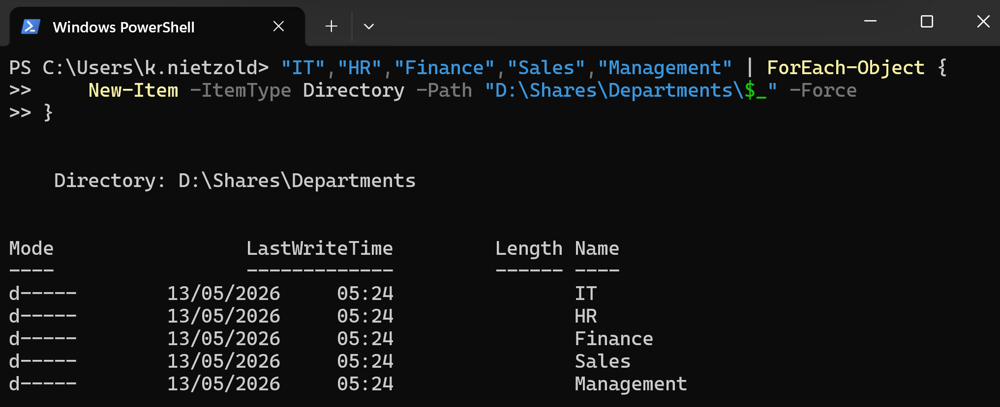
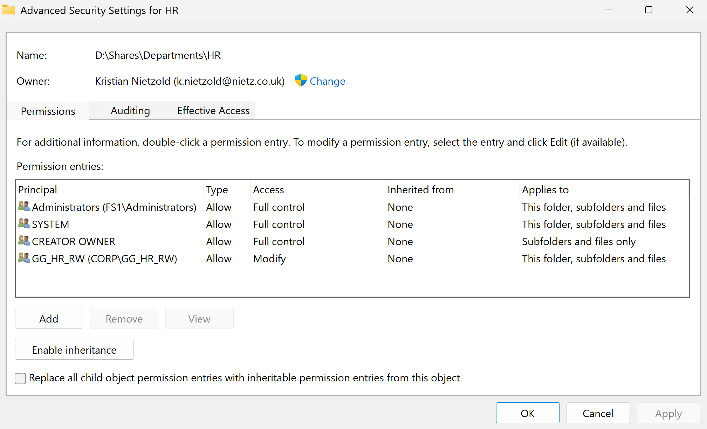
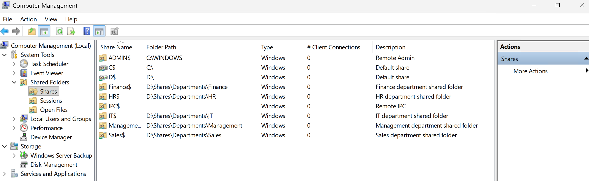
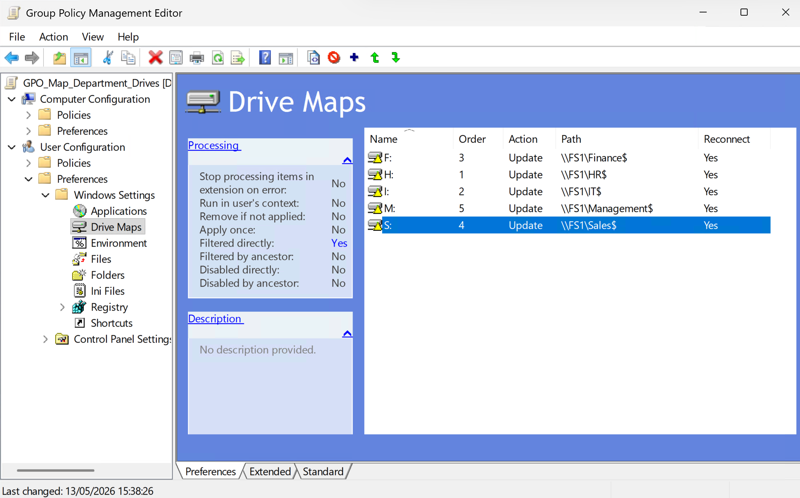
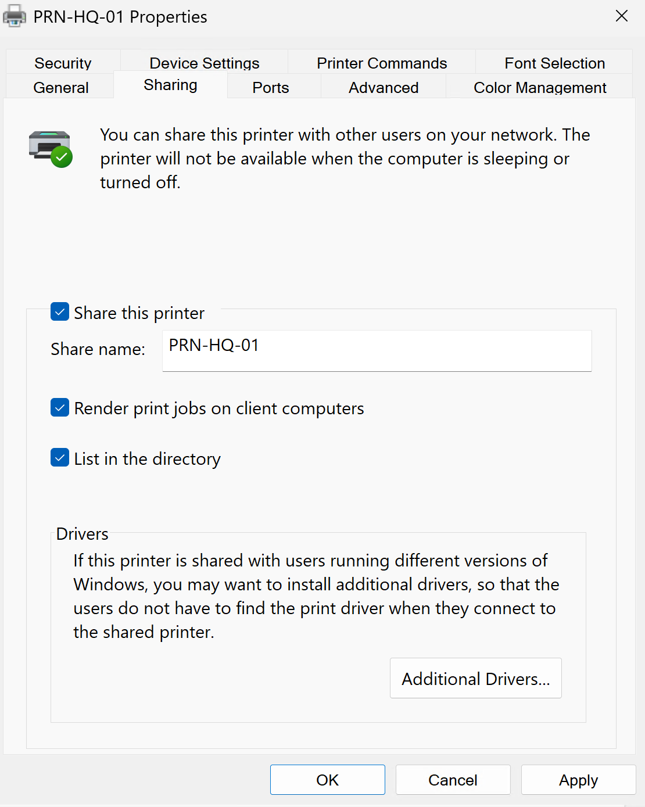
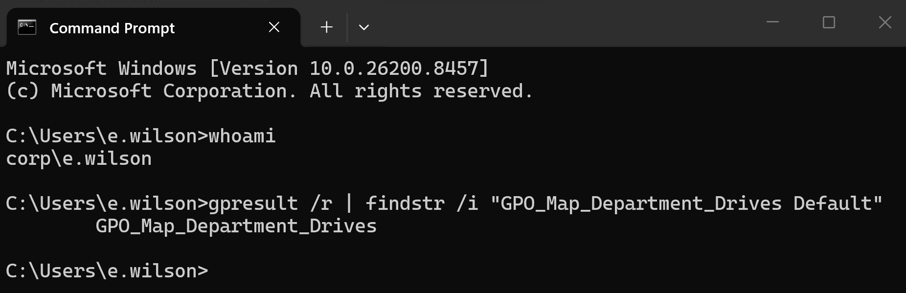
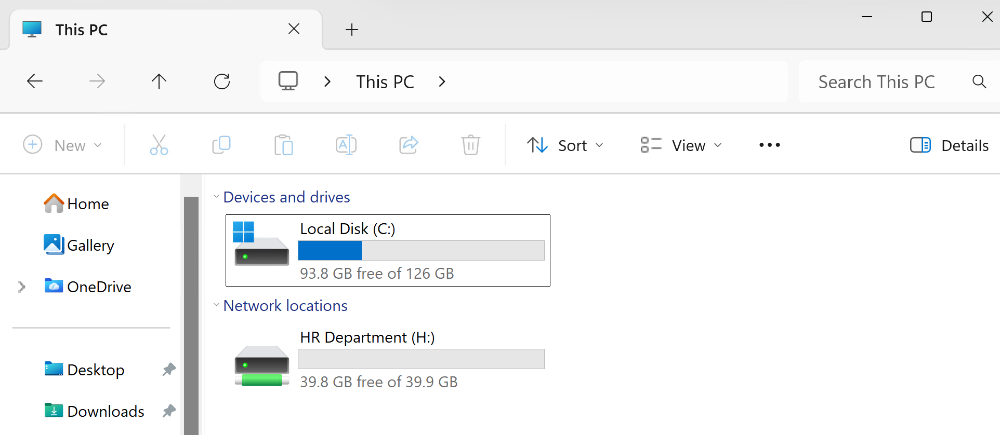
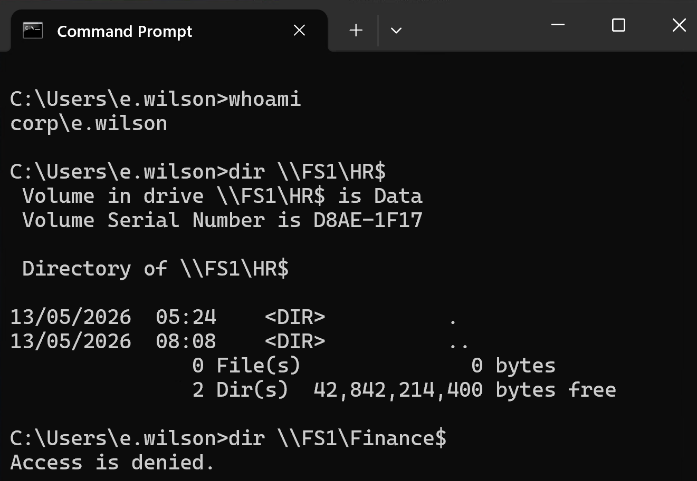

Lab 04: File Shares and GPO
Introduced FS1 as the dedicated file and print server for Nietz Ltd, configured department shares with group-based permissions, delivered mapped drives through Group Policy and validated access from CL1.
Overview
In this lab, I extended the existing corp.nietz.co.uk environment by adding FS1 as a dedicated file and print server, creating department share folders, assigning permissions to the Active Directory groups prepared in Lab 03, and using Group Policy to deliver mapped drives to users.
This builds directly on the earlier domain controller, domain join, and Active Directory user/group administration labs.
Objective
The objective was to create a realistic file share and Group Policy baseline for Nietz Ltd, using department security groups to control access and validating the final user experience from a domain-joined workstation.
Environment
| Component | Value |
|---|---|
| Company | Nietz Ltd |
| Domain Controller | DC1 - 192.168.10.10/24 |
| File Server | FS1 - 192.168.10.20/24 |
| Client | CL1 - 192.168.10.100/24 |
| AD Domain | corp.nietz.co.uk |
| NetBIOS Name | CORP |
| Public / Tenant Domain | nietz.co.uk |
| Primary Groups Used | GG_IT_RW, GG_HR_RW, GG_FIN_RW, GG_SALES_RW, GG_MGMT_RW, GG_PRN_HQ |
Configuration
1. Prepare FS1 for File Services
I prepared FS1 as a separate domain member server so file and print services were not hosted on the domain controller.

2. Department Folder Structure
I created the department folder structure on FS1 for IT, HR, Finance, Sales, and Management.

3. NTFS Permissions
I assigned NTFS permissions using the department security groups created in Lab 03.

4. SMB Shares
I created hidden SMB shares for the department folders so users could access resources through FS1.

5. Drive Mapping GPO
I created a Group Policy object to map department drives based on Active Directory group membership.

6. Shared Printer Object
I staged and shared the PRN-HQ-01 printer object on FS1 for later printer deployment and support validation.

7. Client Policy Application
I confirmed on CL1 that the mapped drive policy was processed from the domain for the signed-in test user.

8. Mapped Drive Validation
I validated the end-user mapped drive experience on CL1 and confirmed that the expected department drive appeared for the signed-in HR user.

9. Access Control Validation
I tested authorised and unauthorised file share access to confirm the permission model worked correctly.

Validation
The lab was validated when FS1 was confirmed as a domain-joined file server, department folders and SMB shares existed, NTFS permissions were assigned to the correct Active Directory groups, mapped drives were delivered by Group Policy, and CL1 showed the expected user access.
Access testing confirmed that the HR test user could open the HR department share and was blocked from the unrelated Finance share.
Key Technical Outcomes
This lab demonstrated how Active Directory groups, NTFS permissions, SMB shares, and Group Policy work together to provide controlled access to shared company resources.
It also showed why file share validation should include both server-side configuration and client-side user testing.
Summary
- I introduced FS1 as a dedicated file and print server.
- I created department folders and hidden SMB shares.
- I assigned NTFS and share access using AD security groups.
- I created mapped drive Group Policy for department access.
- I staged and shared the PRN-HQ-01 printer object.
- I validated mapped drives and access control from CL1.